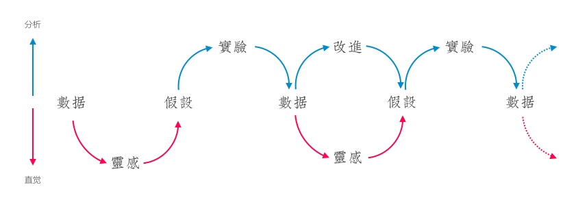

设计思维（Design Thinking）被广泛传播，而我所看到的问题是，人们往往把设计思维本身、设计思维指导下的过程、以及过程中所运用的方法和与之相关的能力分开来谈：
- 设计思维的倡导者无法将设计思维转化成为真正驱动产品创新甚至组织的思维工具；
- 设计管理者生硬复制流程，生硬而缺乏适应性；
- 设计方法实践者照搬某个设计方法，而不明就里；
- 设计从业者忽视设计方法对于设计能力的补充作用。
事实上，设计思维并不仅仅只是一种“思维”，而是设计观、过程、方法、能力四个层次上完整的体系：
只有系统性地理解和实践整个框架，才真正有可能成为一位“设计思考者（Design Thinker）”。在接下来的四篇文章中，我将分别讨论设计思维框架下的设计观、过程、方法、和能力，读者将会对设计思维有一个系统性的认识，首先我们来谈设计观。
设计观
设计观是作为一个设计师你所相信的设计理念，它是高屋建瓴和抽象的，例如精益设计的价值观是“客户开发优先于产品开发（Customer development over product development）”，又如敏捷软件开发的价值观包含“个体和交互胜于流程和工具（Individuals and interactions over process and tools）”，这是决定你做事方式、思维习惯、能力模型的基础。设计思维真正的设计观有三个，分别是：
- 心手合一的“制陶者”；
- 数据和直觉合一；
- 知识漏斗。
制陶者
“制陶者”是理解设计思维最好的隐喻，一个陶器手工业者往往具有以下特点：
- 需要涉及设计、制作、生产、品牌、销售、推广、客户关系一系列的工作，而不仅仅只是某一个环节的重复；
- 他们总生活在过去的经验（专业）、客户的需求（功能与市场）、未来的追求（创新）三种合一的场景中；
- 他们的创造过程（在烧制之前）是即时性的，并总在失败、尝试、调整、成功中进行；
- 他们的手是脏的；
- 他们是在不断学习（制造更多新的造型）和适应需求变化（尽量保证陶器可以被销售）的。
这是设计思维的设计观在具体行为上的最佳体现：
- 设计的最终目标是满足某种需求，是多个环节的集合，而不仅仅是美；
- 设计师需要在自己的专业、商业、创新中找到中和；
- 设计过程不是确定的，而是反复打磨的；
- 设计师必须参与到制作过程中；
- 设计师必须不断提升自己全面的技能并拥抱变化。
事实上，在传统的设计工作中，以上行为并不被鼓励，或被约束：
- 设计师只需要完成某个环节的工作；
- 设计师只关心自己的设计理念是否被表现；
- 设计师期待用最完美的设计一次成型；
- 设计师不愿意或不习惯和工程师一起合作；
- 设计师通常花大量时间在培养工具技能上。
分析和直觉合一
心手合一（思考和实践）的同时，设计思维另一个重要行为方式是分析和直觉的合一。和生活在过去（经验）和未来（灵感）的“制陶者”一样，分析和直觉的结合亦是过去（数据）和未来（灵感）的一体。
分析和直觉的一体体现在以下两种行为模式：
首先是用直觉思维从数据中获得灵感：例如从众多数据中发现线索，用直觉的方式建立假设（红色箭头）；
其次是用分析思维建立验证模型，继续收集数据，再从收集的数据中产生新的灵感或验证之前的假设并产生改进（即设计）；（蓝色箭头）。

分析和直觉合一还体现在不局限于任何起始点，都可以进入“分析与直觉循环”，例如：
- 直接从灵感出发，建立假设与设计实验获得数据，再对灵感进行调整，最终产出设计；
- 直接从设计（即图中的改进）出发，尽可能快地在设计上建立假设和设计实验获得数据，持续演进设计。
因此分析和直觉合一并不依赖“不见兔子不撒鹰”似的完全数据驱动，也反对相信设计领袖直觉的完全直觉主宰，而是形成一种有机的中和方式，相信假设（直觉的）与实验（分析的）。
知识漏斗
设计思维的前提假设是，设计不可能是一个从0到10可预测的过程，因此以上两种行为模式都包含了：
- “观察”：太细的陶瓶颈部可能导致坍塌，或者数据表达某个结果；
- “思考和调整”：在瓶颈处补充一定泥土，或者设计实验进行改进；
- “定型”：把泥坯进行烧制成型，或者把改进的功能进行上线。
这便是设计思维中“知识漏洞”的定义，这个“漏斗”认为：
- Mystery：有广泛存在的事实（显然易见和难以发现的）；
- Heuristic：事实之间存在难以发现的关系；
- Algorithm：部分事实和被发现的定义形成了可以重复利用的知识。

因此对于一个具有设计思维的设计师而言，你需要做的是：
- 如何能够尽量收集更多事实；
- 如何能够在事实中寻找关联关系；
- 如何能够归纳这些事实和这种关系。
既然设计过程不是一个可预测线性的过程，那么设计过程便不应该被割裂成为多个环节，当你把知识漏斗横过来，就得出了设计思维逻辑下设计过程的基本框架：

在这个框架中，有三点是值得注意的：
- 在进入设计之前有一个混沌期（在这里被称作Design Struggle），设计师需要在广泛的事实中寻找模式和关系；
- 混沌期中依然是一脉相承的而不是割裂的；
- 混沌期中是应该允许变化、失败和浪费的。
而这个框架与传统设计流程框架的区别十分明显，传统流程框架中：
- 设计混沌期被认为是没有效率的；
- 各个环节由不同团队和不同专业的设计师完成；
- 越到流程的后期越反感变化和返工。
在这里，设计思维的设计观正式影响了设计过程，正是在这样一种“设计观”下，才形成了后续的设计过程、进而影响对应的方法和设计师能力。
回到我最初的观点，不能理解设计思维的“设计观”，便很难理解设计思维的设计过程，更不能理解每个设计环节中所使用的方法、也无法补充相应的设计能力。这便是成体系理解设计思维的基础。
下一篇中，我将继续讨论与设计思维的“设计观”一脉相承的设计过程，你将会理解为什么设计思维的设计过程是这样的？